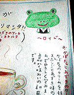

大王様に会うには、上の絵をクリック。ずずっと奥に写真館があるぞ。 |
|
【かえる古新聞】
|
|
【カエル速報】 1.カエルグッズ 2.カエルリンク 3.国家健全化計画 4.謎の髭男 5.とっくりくん 6.街頭で見た蛙 7.カエルショップ 8.奉納カエル絵馬 9.カエル・コスプレ |
| 大王様へのメール |
奉賛会推薦菓子
かえる饅頭 この欄に紹介するカエル物品や書籍についての情報を待っています。みんなで、掘り起こそう、かえる土産。かえる産品を奨励しよう！使うほど安く良くなるカエル品 |
|
|
福岡赤煉瓦館に出現したぞ
|
 |
ロイドーカエルは、かぼちゃとあずきのケーキを奨めていたので、次回は、かぼちゃとあずきのケーキ食べるぞ。 カエルファンが人知れず増殖しつつある時代状況は、ひしひしと感じているんだけど、カエルとは無縁の世界でもあったものが、ある日唐突にカエル化しているなんて、やはり全国かえる奉賛会の地道な活動が、世の中に浸透しつつあるんだろうか
作者は女子大生バイトだ
この、ロイドーカエルにつられて、さっそく喫茶店に入った。中は、古い洋館建築なので、なかなかに趣があるぞ。ダッチコーヒーとハヤシライスを注文しながら、年配の女性店長さんに『メニューにカエルの絵があったけど。。』とつぶやくと、『ああああーあれですか。なんか、おかしかったですか、バイトの女子大生が描いたんですけど。カエルが好きで』との答えである。おかしい、なんてクレームと受け取られては大変なので、すかさず『いや。とっても可愛いです。あの絵につられて、私もここに来ました。いやー、すばらしいです。この洋館喫茶にカエルのキャラクターは最適だとおもいます』と力説強調しておきました。残念ながら本人はいなかったので、カエル絵の動機や、次回作の構想などは、また聞くことにしよう。謎の『かえる友の会』実在を確認
【かえる娘Ｎ同志発】前回お知らせした、『かえる友の会』は、やはり実在することがわかった。入会資格は『かえるのコレクション１点以上を持つこと』。入会すると、会員証とかも貰えるらしい。詳細な資料を入手しているので、さらに続報を待て！スパイとして入会して潜入ルポしようかな(笑)感涙にむせぶメール続々到着
【全国かえる奉賛会】印南町のカエルシールを当選者に発送したところ、全国より歓喜の声が続々と到着している。受け取った人は、毎晩就寝する前に印南町を、はるかに拝むと、勇気百倍するぞ。| 写真の説明＝カエル喫茶化が進むことをうかがわせる、ロイドーカエルのメニュー。下が赤煉瓦館だ。すごい洋館でしょー。喫茶店は午後９時まで営業しているんだよねー |